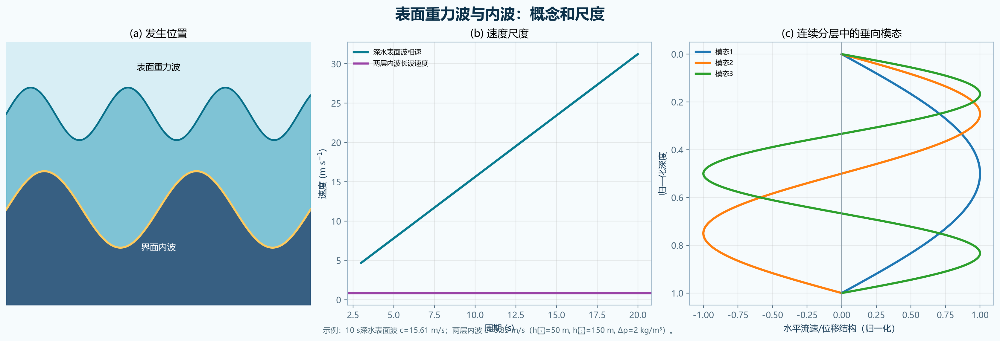
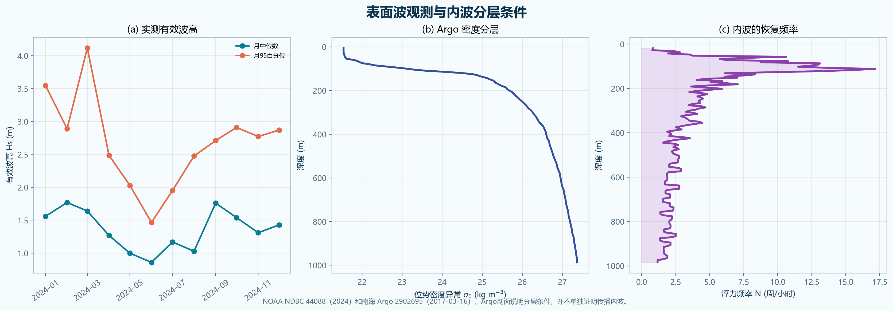

The answer in one minute
Surface gravity waves disturb the air–sea interface. Gravity acting on the displaced free surface is the main restoring force, and the wave energy is concentrated near the surface. Internal waves disturb density surfaces inside a stably stratified ocean. Buoyancy, caused by gravity acting on density differences, is their restoring force.
Surface waves are generally much faster and have visible surface elevations from centimetres to metres. Internal waves are slower because density contrasts within seawater are small, but their vertical displacements can reach tens of metres or more while leaving only a weak surface signal. In a stable water column, a displaced parcel becomes heavier or lighter than its surroundings and is pushed back toward its equilibrium depth; overshoot produces an oscillation. A sharp two-layer density jump supports an interfacial wave, whereas continuous stratification supports depth-filling internal-wave beams and discrete vertical modes.
Four differences to state clearly
| Feature | Surface gravity waves | Internal waves |
|---|---|---|
| Where | At the free surface between seawater and air; motion decays downward. | Within a stratified water column, especially near pycnoclines, or along an interface between layers. |
| Restoring force | Gravity acting on free-surface displacement; the air–water density jump is large. | Buoyancy from gravity acting on smaller density differences within the water. |
| Speed | Usually faster. For deep water, cp=gT/(2π); a 10 s wave travels at 15.61 m s−1. | Usually slower because reduced gravity is small. The worked two-layer example gives 0.85 m s−1. |
| Amplitude | Surface elevation commonly centimetres to several metres. | Isopycnal displacement commonly metres to tens of metres and can exceed 100 m, with a small surface signature. |
| Frequency/visibility | Readily visible; gravity-wave frequency is governed by wavelength and water depth. | Usually hidden from direct view; in a rotating continuously stratified ocean, freely propagating frequencies lie between f and N. |
Why stable stratification permits internal waves
N² = −(g/ρ₀) dρ/dz > 0
Here z is positive upward. Stable stratification means density increases downward, so dρ/dz<0 and N²>0. N is the buoyancy or Brunt–Väisälä frequency.
Move a parcel upward without immediately changing its density. It is denser than its new surroundings and sinks. Move it downward and it is lighter than its surroundings and rises. Momentum carries it past equilibrium, creating an oscillation.
N²>0: stable and oscillatory; internal waves can propagate. N²≈0: nearly homogeneous and weakly restoring. N²<0: gravitationally unstable; overturning convection grows instead of a small oscillation.
Interfacial waves versus continuous stratification
Interfacial internal wave
An idealized ocean contains two nearly homogeneous layers separated by a thin density jump. The interface moves up and down while the layers move in opposite directions.
For a long wave, c≈[g′h₁h₂/(h₁+h₂)]1/2, where g′=gΔρ/ρ₀. It is a simple model for a sharp pycnocline and can develop into large nonlinear solitary waves.
Continuously stratified internal wave
Density varies smoothly with depth and is described by N(z). Motion extends through a finite depth rather than being confined to one interface.
The vertical structure forms modes with nodes and phase changes, or propagating beams. Each mode has its own speed and structure; the first baroclinic mode is usually fastest and has the largest vertical scale.

Surface motion observed; internal-wave capacity diagnosed

The buoy time series quantifies surface-wave height and period.
Positive N² identifies the restoring environment for internal waves.
Time-resolved density and velocity or repeated imagery must reveal phase movement, frequency and wavelength.
Integrated response
Ocean surface gravity waves are disturbances of the air–sea interface. Water parcels mainly move in orbital paths while the wave form and energy propagate. Gravity acting on the displaced free surface provides the restoring force. Their behavior depends on wavelength relative to water depth: deep-water waves are dispersive, with ω²=gk and phase speed cp=ω/k, whereas shallow-water waves travel approximately at c=(gH)1/2.
Internal waves are oscillations of density surfaces within a stably stratified ocean. They occur because a parcel displaced vertically from its equilibrium depth has a different density from the surrounding water. Buoyancy accelerates it back; its inertia causes overshoot and sustained oscillation. With z positive upward, stable stratification has N²=−(g/ρ₀)dρ/dz>0. In a rotating continuously stratified ocean, freely propagating internal waves usually satisfy f<ω<N.
The two wave classes differ in at least four ways. First, surface waves occur at the free surface, while internal waves occur within the water column. Second, surface waves are restored by gravity acting across the large air–water density contrast, while internal waves are restored by buoyancy associated with much smaller seawater density differences. Third, surface gravity waves are generally faster; for example, a 10 s deep-water wave has cp≈15.6 m s−1, whereas the example two-layer internal wave travels at about 0.85 m s−1. Fourth, surface elevation is commonly centimetres to several metres, whereas internal isopycnal displacement can be tens of metres or more even when its surface expression is small.
In the interfacial model, two nearly homogeneous layers are separated by a sharp density jump. The displacement is concentrated at that interface, reduced gravity g′=gΔρ/ρ₀ controls the restoring force, and the long-wave speed is c≈[g′h₁h₂/(h₁+h₂)]1/2. In a continuously stratified ocean, density and N vary smoothly with depth. Internal waves occupy a depth range and form vertical modes or beams; different baroclinic modes have different node patterns and propagation speeds. Thus the interfacial model is a useful simplified limit of a sharp pycnocline, while continuous stratification represents the broader vertical structure of the real ocean.
Self-check and scope
- Answers all requested concepts and gives five explicit comparisons.
- Uses the correct stability sign convention for z positive upward.
- Distinguishes phase speed from amplitude and surface elevation from isopycnal displacement.
- Separates a two-layer interface from continuous vertical modes.
- Verifies both speed examples independently in MATLAB.
- Treats the Argo profile as evidence of stable stratification, not as proof of a propagating internal wave.
Primary data and references
Reproducibility: the package includes the compressed NDBC record, the Argo NetCDF profile, processed CSV tables, SHA-256 hashes, the Python analysis, and the MATLAB verification script.